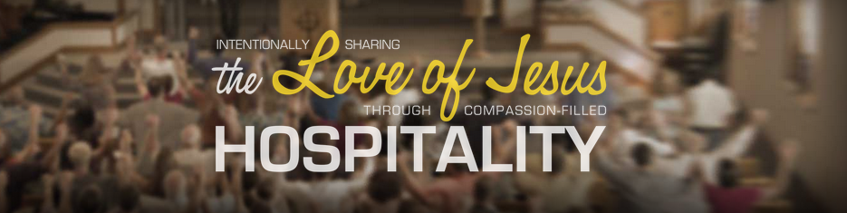

Closing Statements
What’s next? Obviously this is a big question and one that should not be rushed into. There are some things however that the building team feels is important to point out.
- Energy rebate programs are expiring in 2016 with programs currently in place that could save as much as 10% or more of the cost which apply to geothermal, lighting an other concepts that could provide long term cost benefits to NHRC.
Repairs to the parking lot should co-inside with construction – be aware however of potential safety issues that may currently be happening.
- It has been a long time since any significant money has been spent updating the church. Approximately 25 years since the sanctuary was turned and a number of years since the fellowship area was built.
- The report presented by B.V.T.F. in 2012 outlines very well the specific areas of the church that need attention. That team worked closely with the congregation to outline needs and as such that report needs to be referenced.
- The building needs to be used more than it currently is.
- Build for the kids.
- Intentionally sharing the love of Jesus through compassion-filled hospitality
How will the building be used? Will the building be used MORE? Will our congregation be open to uses that are less traditional? How will we manage the building? Will we rent space to outside organization to help cover expense of the building? Will we promote the use of the building?
NHRC is in a great place to even be able to consider this project.
NHRC Long Term Vision
What is the long term vision IF NHRC moved forward with this project?